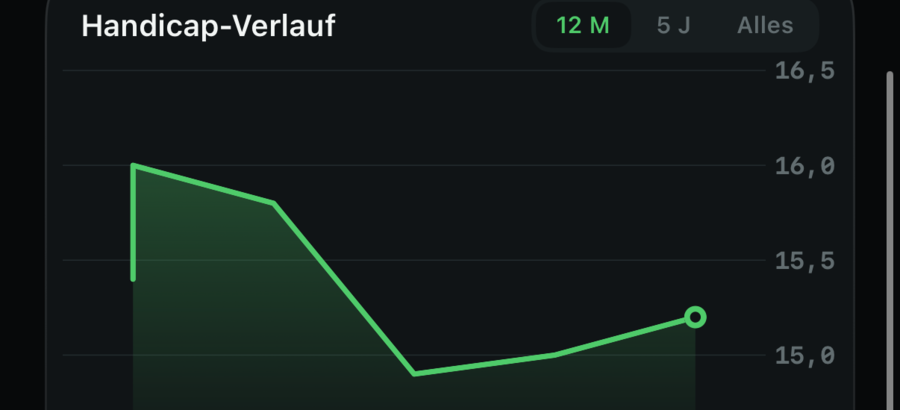
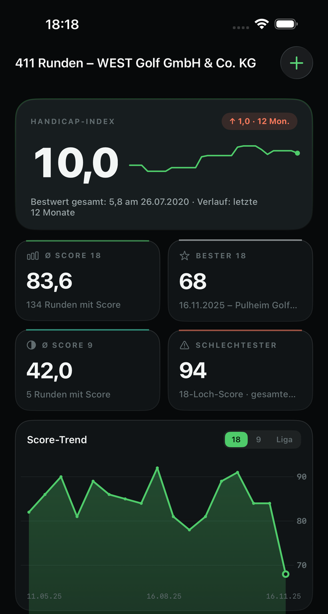
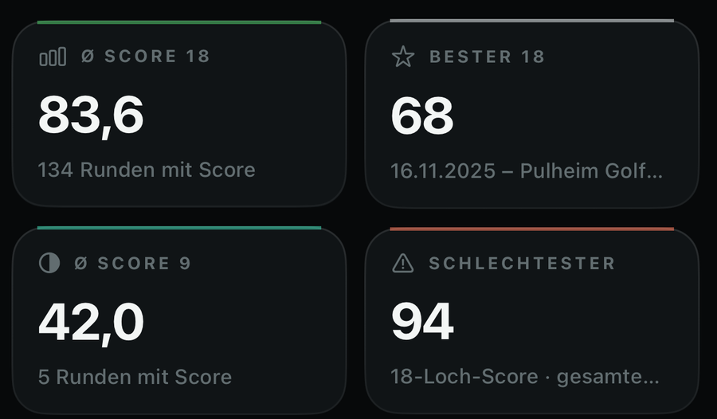
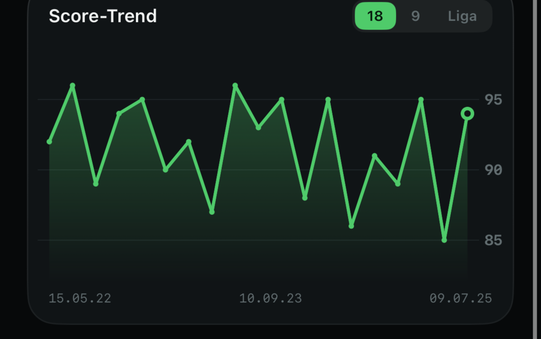
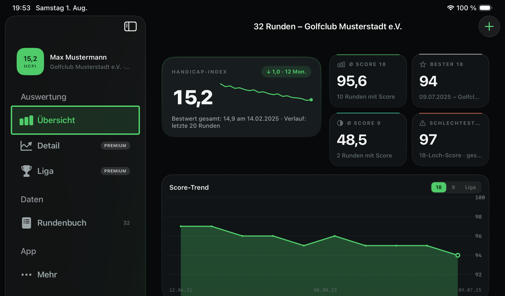

Handicap-Verlauf als eigene Karte
Index und Low HCPI kommen direkt aus dem Sheet-Kopf, nicht aus einer Schätzung. Darunter die Verlaufskurve der letzten zwölf Monate.

HandicapLab liest das PDF aus dem DGV-Serviceportal und rechnet daraus Verlauf, Kennzahlen und Detailanalysen. Alles auf dem Gerät.

Das Sheet holst du dir einmal aus dem Serviceportal. Danach genügt ein Tippen auf „PDF importieren“.
Auf golf.de unter „Mein Bereich“ anmelden und das Handicap History Sheet öffnen.
Unterhalb der Tabelle sitzt der Druck-Button. Das PDF enthält alle Runden seit Vereinseintritt, nicht nur die zehn auf dem Bildschirm.
Über „PDF importieren“ oder das Teilen-Menü. Der Import dauert wenige Sekunden.
Ausführliche Anleitung und ein anonymisiertes Beispiel-Sheet zum Ausprobieren
Index und Low HCPI kommen direkt aus dem Sheet-Kopf, nicht aus einer Schätzung. Darunter die Verlaufskurve der letzten zwölf Monate.

Durchschnitt über 18 und 9 Loch, bester und schlechtester Wert, jeweils mit Datum und Platz.

Umschaltbar zwischen 18 Loch, 9 Loch und Liga.

Bis zur WHS-Umstellung führte das History Sheet Stableford-Nettopunkte statt Bruttoscores. HandicapLab erkennt diese Runden und zeigt sie an, statt die Historie dort abzuschneiden. Bei langjährigen Vereinsmitgliedern reicht die Auswertung damit oft über zehn Jahre zurück. Aus den Score-Durchschnitten bleiben die Punkte-Runden heraus, damit die Werte vergleichbar bleiben.
Dieselbe Auswertung, nur breiter: Navigation links, Kennzahlen und Diagramm nebeneinander.

Kein Konto, kein Tracking, keine Analytics, keine Werbung. Das PDF wird auf dem Gerät gelesen, und die Auswertung bleibt dort.
Ab iOS 18. Bis zur Freigabe im App Store erreichst du mich per Mail.